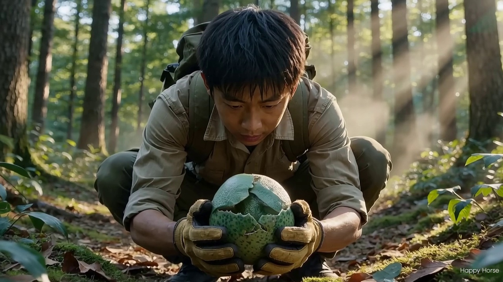
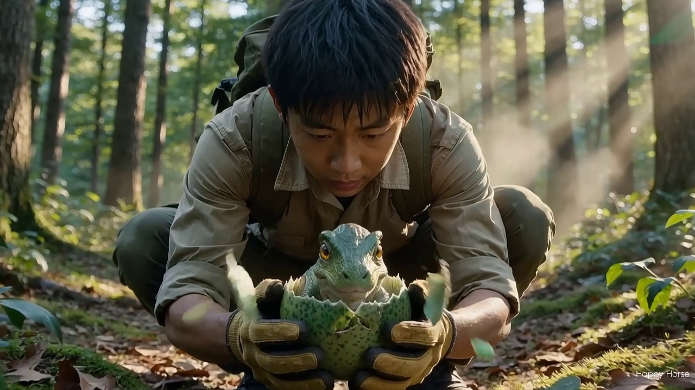
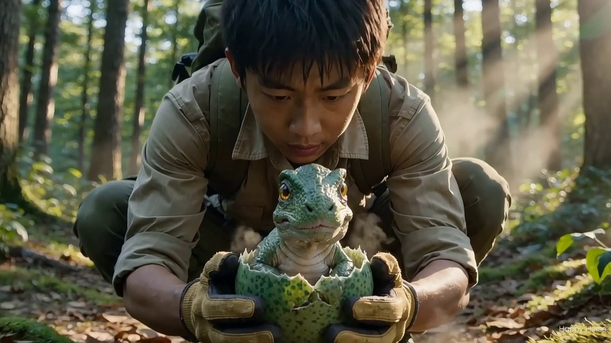
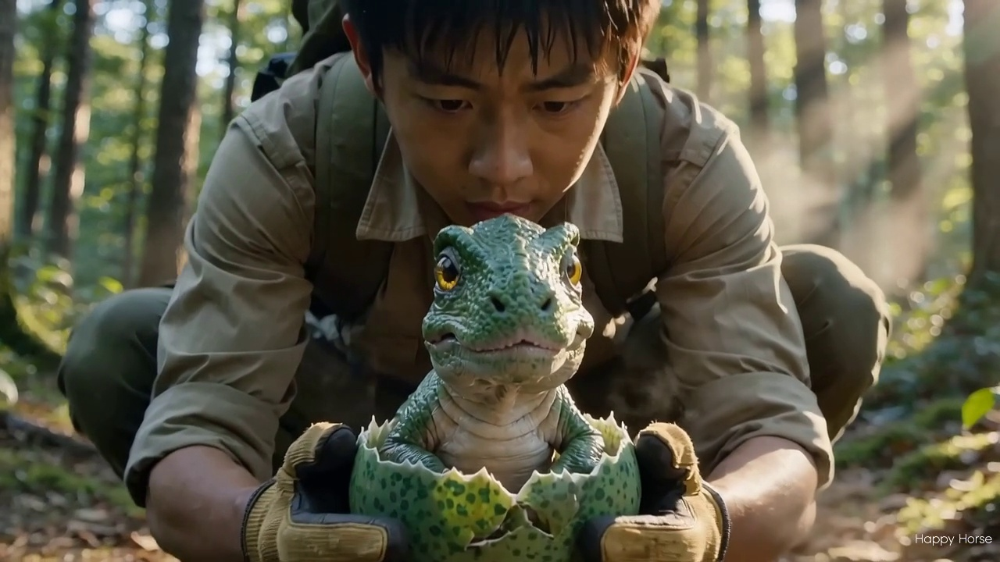
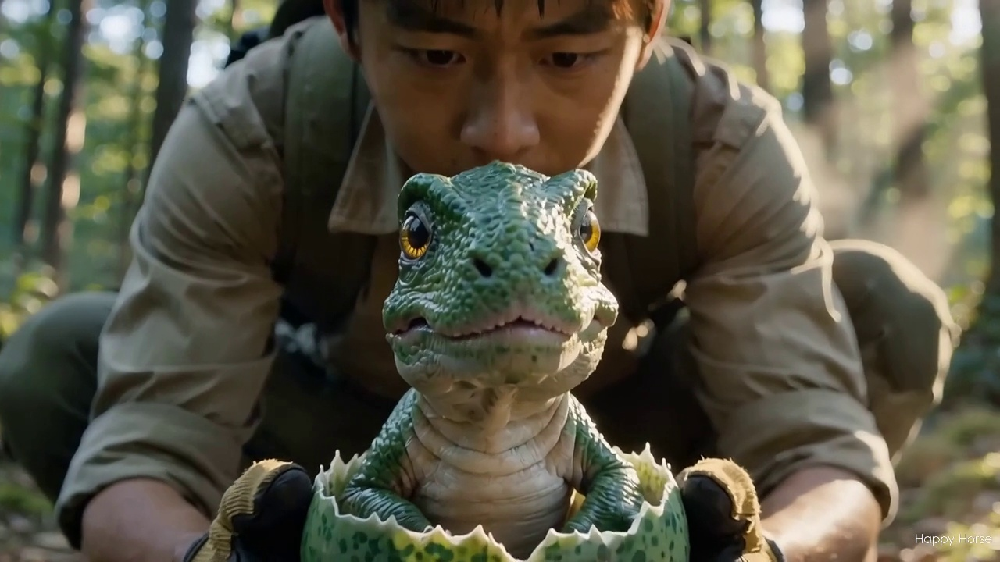
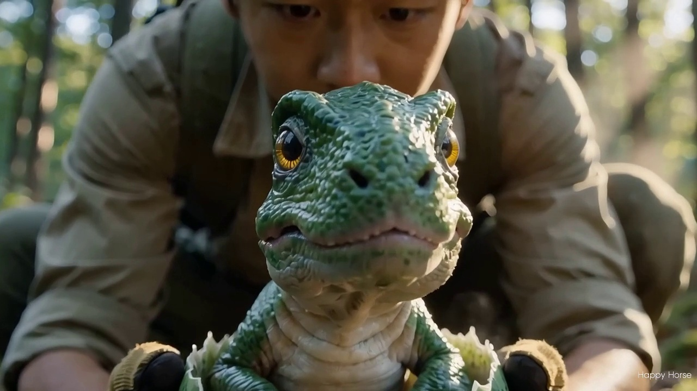
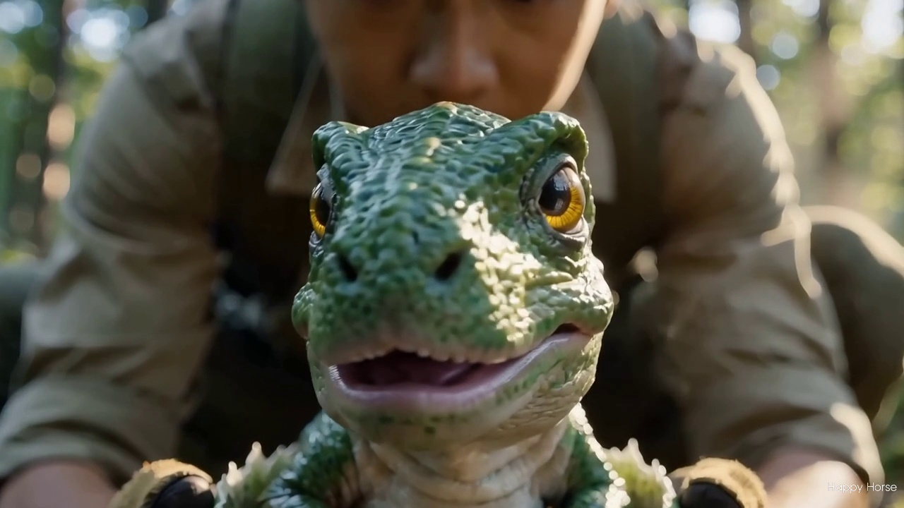
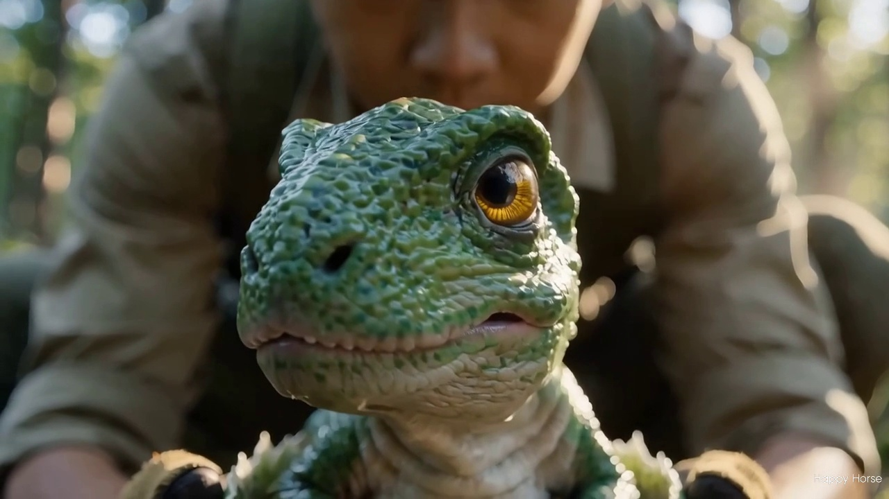

bban_intro_video_prompts_report.html、成品驗證見 bban_intro_video_delivery_report.html。本頁的「蛋孵→探頭」為舊方向成品，且片中幼龍誤寫為翠綠色——伴伴 2★ 定稿為紫紅色（見 assets/dinos_2/DFD-000_伴伴_2star.png），僅作留檔參考。| 項目 | 值 |
|---|---|
| 解析度 / 幀率 | 1280×720（16:9）/ 24 fps |
| 長度 / 幀數 | 5.12 秒 / 123 幀 |
| 檔案大小 | 2.7 MB（2,696,959 bytes） |
| 生成模型 / 端點 | happyhorse-1.0-t2v ・ POST /videogenerator/generate（同步送件、GET {BASE}/{task_id} 輪詢） |
| 費用 | 720P ¥0.9/秒 × 5 秒 ≈ ¥4.5（本次實際 1 次成功） |
| 驗證 | cv2 解碼成功、8 影格抽樣逐張目視通過（下表） |
| 需求 | 結果 | 說明 |
|---|---|---|
| 擬真 | ✅ 通過 | 照片級寫實渲染，皮膚、蛋殼、植物紋理細節完整 |
| 真實森林場景 | ✅ 通過 | 高大樹冠＋午後體積光＋苔蘚落葉地面，背景淺景深虛化 |
| 主角撿到未孵化的蛋 | ✅ 通過 | 年輕探險者蹲於林地，雙手捧起翠綠花紋蛋 |
| 捧在手上 | ✅ 通過 | 戴手套的雙手於掌心捧蛋，特寫構圖 |
| 蛋漸漸碎裂 | ✅ 通過 | 蛋殼由頂端裂開、裂紋蔓延、碎片剝落（0.3s→1.6s 過程連貫） |
| 伴伴嬰兒龍探出 | ✅ 通過 | 翠綠皮膚＋金黃琥珀大眼＋奶油色肚頸，符合風格A 家族特徵；鏡頭推近至面部特寫收尾 |








| 端點 / 模型 | 探針結果 | 結論 |
|---|---|---|
/videogenerator/task + Wan2.2-T2V-A14B | 20033 视频生成任务创建失败（空 content 與空文字皆同） | 此模型目前不可建立任務（部署浮動），未採用 |
/videogenerator/generate + happyhorse-1.0-t2v | 10012 需要文本提示词(prompt) | 認證通過＋模型可部署 → 採用 |
watermark 欄位，但 Wan2.2 現未部署）。若需無浮水印版：待 Wan2.2 可用後以 watermark:false 重跑，或後製裁切/遮罩。另：幼龍為寫實比例而非 Q 版 chibi——這是「擬真」需求下的合理取捨，家族識別色（翠綠＋金黃眼＋奶油肚）已保留。| 檔案 | 用途 |
|---|---|
assets/intro_bban_hatch_720p.mp4 | 開場動畫成品（本報告上方可直接播放） |
assets/dinos_2/bban_samples/_gen_sophnet_intro_video.py | 生成腳本（送件＋輪詢＋下載，一鍵重跑） |
assets/dinos_2/bban_samples/_check_intro_frames.py | 影格抽樣驗證腳本 |
assets/dinos_2/bban_samples/_intro_frames/*.jpg | 8 張驗證影格 |